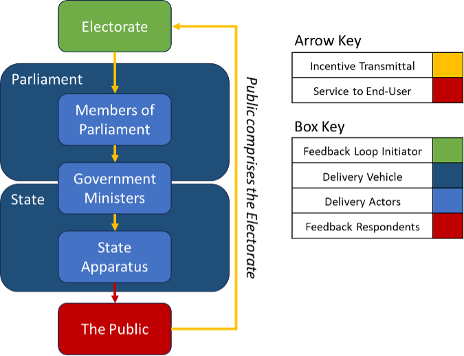
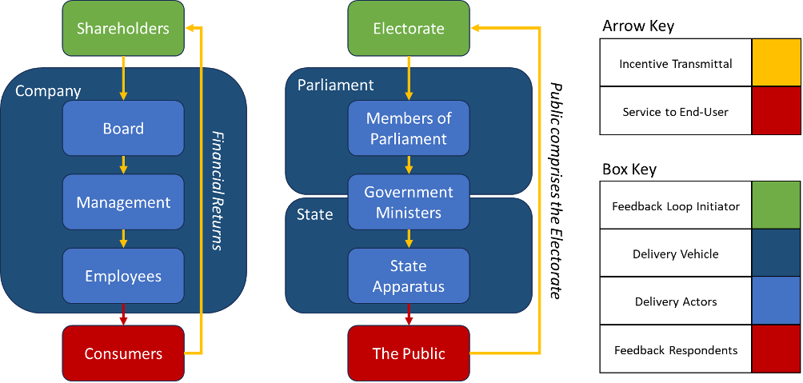

Part 3: Electoral Feedback Loops
Introduction
In the public sector, the financial feedback loops that rely on quantitative measures of profit and risk often apply only imperfectly or sometimes not at all. Privatising everything is not always the solution, as financial feedback loops are themselves incapable of incentivising the efficient delivery of some of these goods and services. Free rider problems, tragedy of the commons and natural monopolies are all classic examples of such issues. That does not mean that we should just accept inefficient public delivery, however. In the remaining parts of this series we will look at incentive mechanisms in the public sector.
If the financial feedback loop does not usually apply in the public sector, we need other incentive mechanisms to address these areas:
- Determining how to address the need: Does the state receive feedback on its high-level decisions on how to address the identified need? How does the state determine the method of address, and is this determination robust? How will the state know if the chosen method is no longer appropriate, and whether alternative methods would deliver better outcomes?
- Selecting the entity to address the need: Once the state has decided how to respond to some demand or need, does the state receive feedback on its decision on which entities it directs funds through? And are the relevant state actors incentivised and able to respond to feedback and redirect funds where failure is identified?
- Management performance: Do the management of entities in receipt of state funding receive feedback on their relative success or failure? And are they incentivised to respond to that feedback or are they replaced where they fail?
- Funding requirement: How much funding should be allocated to each goal or entity? How should different goals be prioritised and trade-offs made?
In the public sector, as outcomes are usually not measured in the same currency as inputs, there is also a fourth issue to address. The issue of how much funding to allocate. When funds are deployed to seek profit, the level of funding is subsumed into a return metric which accounts for the level of funding - i.e. the return on investment is equal to the return divided by the funding provided. In the public sector, returns are often not financial in nature, and so we cannot assure ourselves that the level of funding was reasonable by comparing it with the return.
For example, take the need to police our national borders and the entry of people and goods into the UK:
- How do you determine how best to address the need for policing our national borders and the entry of people and goods into our territory?
- How do you judge the success of taxpayer funding allocated to the Border Force and whether a different state (or private) entity might achieve its goals more efficiently?
- How are the Border Force’s management assessed and what incentives do they have to achieve their goals?
- How do you determine the level of funding required to achieve the stated goals, and whether that funding would be better spent on another priority or better left in the pockets of taxpayers altogether?
In the public sector, there are some solutions to these questions. The solutions, however, will differ according to what is being funded and will not be easily comparable across funding priorities. A fundamental issue for the public sector is that feedback loops are often qualitative rather than quantitative and very rarely comparable across priorities, entities and management. For example, I can compare an investment in steelmaking against an investment in a software business using the same metrics of financial risk and return – I cannot so easily compare public investments in healthcare to investments in the arts and culture using the same metric. There are few contenders for an overarching and cross cutting feedback loop like the financial feedback loop. Possibly the only contender is the electoral feedback loop.
The Electoral Feedback Loop
In democratic countries, the state has an electoral feedback loop. The exact way that this loop functions is dependent on the electoral systems used. In the UK the electoral feedback loop on a UK-wide level looks something like this:
The electorate in each constituency elects a Member of Parliament (MP) to represent them in the House of Commons. Although political parties run national campaigns and increasingly have a more “presidential” style leader and campaign focus, the electorate do not vote for a government or Prime Minister. Electors vote for their local MP – who will usually be affiliated with one of the major national parties.
MPs are primarily legislators, and the Government requires the support of a majority of them to pass legislation and exercise its powers. MPs also hold the government to account through mechanisms such as committees, parliamentary questions and debate, and many MPs also act as lobbyists for their local areas and electorate. The Lords also play a role in legislating and holding Government to account, however, they are somewhat disconnected from the electoral feedback loop.
Ministers are formally appointed by the Monarch, but the Monarch is constrained in who they may appoint. In practice, the Prime Minister is the leader of the political party which can command the confidence of MPs, i.e. the party with a majority of MPs or largest party in a coalition which contains the majority of MPs. Political Parties have their own leadership mechanisms to determine their leader.
In practice, the remaining Ministers are chosen by the Prime Minister and then formally appointed by the Monarch. The Prime Minister’s choices are not unconstrained however, as they must appease their own electoral coalition (be it their party MPs or a coalition of parties). The degree to which the Prime Minister can transmit their incentives onto the other Ministers is highly dependent on the Prime Minister’s personal power and the security of their own position.
The Ministerial Government is responsible for setting the policies of Government. They lead the legislative agenda and hold many of the formal executive powers of state which are attached to their Ministerial positions. Regarding legislation, Ministerial Government must rely on the civil service to help create legislation, Parliament to pass it, and then the wider state apparatus and the courts to implement it. Regarding state powers, their exercise is primarily through the state apparatus and so whilst the Minister may give the order or set the direction, they are reliant on the state apparatus to execute on this.
The state apparatus are the organisations and people within them responsible for carrying out the functions of the state and executing upon the directives of Ministers. There are a vast array of state bodies who come under the purview of Ministers to greater or lesser degrees. From the civil service to local government, policing, the military, the NHS and the judiciary. In our electoral feedback loop, it is important to note that it is the state apparatus that ultimately executes state activity and interfaces with the public. If the electoral feedback loop is to be effective, then the incentives provided by electoral cycles must in some form transmit to incentives for the state apparatus.
Drawbacks of the Electoral Feedback Loop
The bluntness of the electoral feedback loop
The first thing to note about the electoral feedback loop is that it is a blunt instrument. The information that it delivers is not granular. It has become convention that electoral victory for a party is a mandate to implement a broad range of measures set out in a party’s election manifesto, however, usually the election will be fought on a few key issues and the remaining policies effectively get in through the back door. Unless the electoral system provides for referendums on all major policy decisions, the system is necessarily blunt. People and parties receive support as opposed to policy.
The implication of this bluntness is that bad policies, even when unpopular with the electorate, can survive many election cycles insofar as they avoid becoming the central defining issue in any electoral cycle. The electoral system simply does not allow the level of specificity to give feedback on specific policies. Instead, feedback is given only to a package of policies put together by a party, which is subsequently combined with personalities and partisan support. Arguably, even this is an idealisation of reality – feedback is given on the state of the country, and if the country is getting worse, then the incumbent party’s majority is usually removed. In the financial feedback loop, there are plausibly millions of feedback loops operating at any given moment, in the electoral feedback loop there is only one.
This is not to suggest that a system that delivers granular and quantitative information would be better. Unlike prices, electoral systems do not demand trade-offs from voters. The voter can demand free public services, lower taxes and increased public sector pensions and employment rights in the same breath. Incorporating trade-offs into a voting system would require a level of knowledge and foresight that simply cannot be expected from voters. However, without trade-offs, the voter cannot effectively reveal their preferences. This is a common issue of government by polling on every issue; single issue polling might help politicians think about what to say, but it should not inform what they do.
The electoral feedback loop is blunt:
- Electoral feedback answers, from the perspective of the electorate, two questions: “have things gotten worse?” and “are the opposition credible-ish?”. If the answer to both is yes, then a change of government tends to occur.
- Sometimes elections may be fought on specific issues – but usually these issues can be boiled down to the question on “have things gotten better or worse?”.
- This means that feedback is very broad or general – and does not contain specific information on what made things better or worse. Also, in many cases the thing that made things better or worse may be an exogenous shock.
- Even if you do not subscribe to this view, you might instead say that parties are elected based on their manifesto policies – elections still do not provide specificity as manifestos are package deals and do not provide the granularity of data to understand what policies within are popular.
- Even if you poll individual policies with the electorate, popularity does not entail that the policies will be successful or that the electorate will like the outcomes. Many policy impacts are second order and include trade-offs – the effects of which cannot be captured in polling and the average person, or even the average politician, will not have considered views on.
- The electoral cycle is not completely useless, as it does prevent recurring and consecutive failure by the same party/people. However, the electoral cycle does not provide very good information on the revealed preferences of the electorate – it is too blunt for that.
Incentive transmittal through the electoral feedback loop
In the diagram below, we have the financial feedback loop (left) and the electoral feedback loop (right). Both feedback loops have a series of actors who stand between the body which receives the feedback (green) and those who provide the feedback (red). For the feedback given by respondents to be effective, the feedback loop initiator must be able to transmit these incentives down to those who directly provide the goods and services to the feedback respondents. Put very plainly, it is not an effective feedback loop if the feedback does not in some form reach the people who do stuff.
For the Financial Feedback Loop in the above diagram, there are several ways in which the employee and management incentives are linked to, or transmitted from, the consumers who provide feedback on the company performance.
Direct Transmittal: Although management and employees are further down the feedback loop, there are some scenarios where the feedback from consumers impacts them directly. For example, if the feedback is sufficiently negative then the company will no longer be financially viable and will cease to exist, along with management and employees’ jobs. There is therefore a direct incentive for management and employees to perform, although noting that the strength of this incentive is dependent on the ease of which management and employees could find alternative roles.
Pass Through Transmittal: Shareholders (and often members of the board) have a financial stake in the company, and so the financial returns provide a direct incentive to ensure that the company satisfies consumer demand. The shareholders and board can transmit incentives to the management to ensure that management incentives are aligned, for example through linking management reward to company or shareholder performance. Management in turn can ensure that employees’ incentives are aligned to management, again for example through performance-based bonuses or performance-based progression. Of course, at each stage of incentive transmittal, there is the risk of imperfect alignment, and this is amplified by the quantity of transmittal nodes.
Returning to the state apparatus, how do incentives get transmitted from the public/electorate to the state apparatus? The first thing to note is that the transmission is usually not direct. A change of Government does not mean a loss of employment for Civil Servants. On a personal level, Civil Servants can be ambivalent about the popularity of the sitting Government.
The second point to note is that, even before we reach the state apparatus which itself contains multiple layers of management, the incentives offered by the electorate must pass through several nodes before reaching the Civil Service and broader state apparatus. Parliamentarians have their own local incentives. The political parties, and particularly the party in Government has a different set of incentives too. And then Government Ministers have their own agendas and incentives, both collectively and individually. The Minister’s incentives have already been warped and influenced by a multitude of sources, for better or worse, even before the Minister attempts to transmit it to his Civil Servants.
Misalignment between electoral incentives and the national interest
Given that the electorate vote for their local MPs, and not governments or governments to be, the electoral feedback loop is indirect insofar as voters do not get to directly choose their government. The indirectness also contributes to a phenomenon where, nationally, not all votes are equal. Although for the election of any individual Member, all votes are equal, votes for Members in more marginal places have greater impact on the ultimate composition of Parliament than votes in “safe” seats. This paper will not get into the merits and drawbacks of such a system, however, it is important to note three things:
- Political parties do not need a majority of votes in the country to have a majority in Parliament.
- Votes in some areas are much more valuable to a political party than others, and the areas that matter may also differ for each political party.
- The incentives of individual MPs differ both from that of other MPs and the party overall.
The reason to note points 1 and 2 above is that they have an enormous impact on the incentives provided to political parties. To maintain power, parties do not have to please everyone, and they do not require the support of the majority. Further, they are incentivised to viciously target a small subset of the electorate for support at election time, whilst sufficiently avoiding the alienation of their core support in “safe” seats.
On point 3, each individual MP has an incentive to please their own individual electorate in order to get re-elected, and the interests of the electorates in different constituencies can and will differ at various times from one another, and from the national interest. This can be due to different preferences across different segments of the country, but also scenarios where the interests of certain areas and the national interest are simply at odds - as we see with many national infrastructure projects.
The combination of point 2 and 3 may also mean that, where a key set of parliamentary constituencies have local interests that are detrimental to the national interest, the electorate may incentivise political parties to act against the national interest on certain issues.
Summary
Although financial feedback loops don’t tend to read across well into the public sector, the public sector has its own overarching feedback loop in the form of an electoral feedback loop.
However, the electoral feedback is blunt and does not transmit information on a granular level or in a quantitative form. It thus struggles to handle trade-offs and only gives high level feedback on whether things are getting or worse. The electoral feedback loop also struggles to transmit incentives through to the organisations and individuals who execute state activities, and there is scope for the incentives it does transmit to be misaligned with the national interest.
It's not all doom and gloom for democracy, however, and in the next section we will look at what our electoral system does achieve.